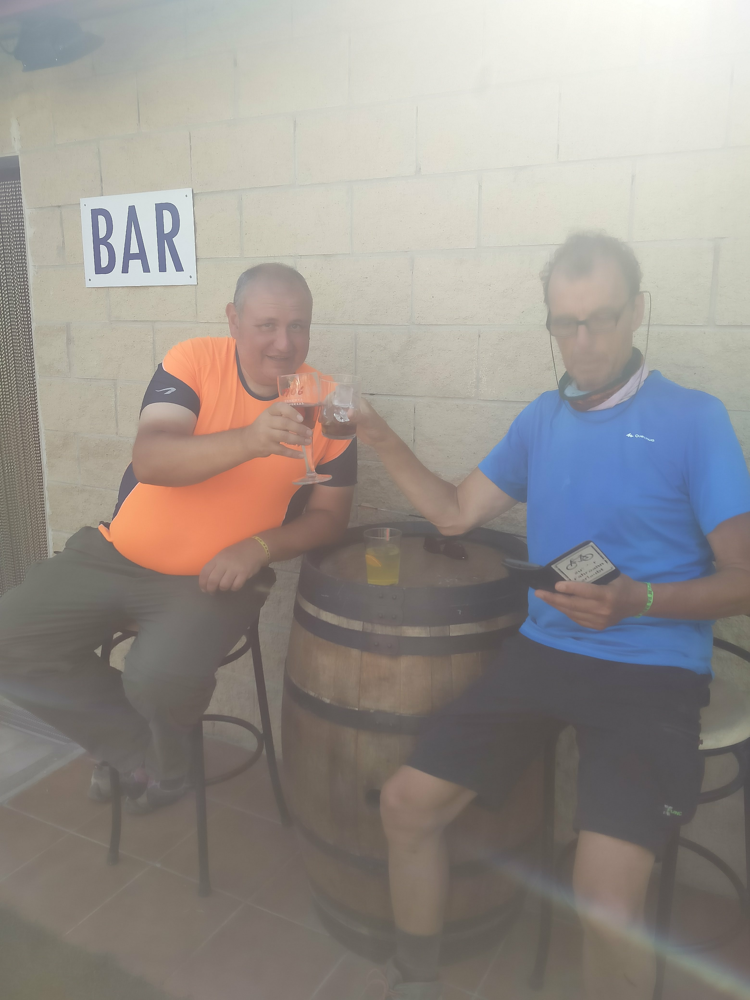

Hello! I'm passionate about travel, especially when it combines adventure, history, and personal growth. One of my greatest loves is the Camino de Santiago, a pilgrimage route with deep significance and beauty.
The Camino de Santiago isn't just a long walk; it's a journey filled with meaning, history, and connection. Walking the Camino allows me to reflect, appreciate nature, and meet fellow pilgrims from all walks of life.
From the beautiful landscapes of Spain to the ancient towns and spiritual moments, every step on the Camino is a memorable experience.
I’ve walked different parts of the Camino, and each time it's been a transformative experience. Whether it's walking the famous French Way or exploring less-known routes, the journey always brings something new.
